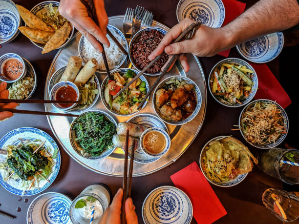

Anime on the Screen
Magic on the Plate
Tonkotsu Ramen
Dumplings
Onigiri

Our Story
It started with a simple idea: what if your favorite anime hangout existed in real life—and it served incredible food? We grew up binging late-night episodes, debating plot twists, and bonding over characters that felt like friends. Somewhere between the opening theme and the end credits, we realized anime isn’t just something you watch—it’s something you share. So we created a space where fandom meets flavor. A place where the screens glow, the music hits just right, and every dish is inspired by the worlds that raised us. Whether you’re here for a quick bite, a full watch party, or just to vibe with people who get it, you’re part of the story now. Grab a seat. The next arc starts here.
Read More
Our Menu
Our menu is inspired by the flavors we love and the worlds that inspired us. Each dish is crafted to be bold, comforting, and memorable — whether you’re grabbing a quick bite or settling in for the full experience. There’s something here for every appetite.
Read MoreWeekly Events
Step inside and slow down. From the atmosphere to the menu, every detail is designed to feel familiar and exciting at the same time. Whether you’re a lifelong fan or just discovering anime, this is a place to relax, explore, and enjoy something a little different.
Events
Our events bring the community together. From watch parties to themed nights, we host experiences that turn an ordinary visit into something special. Check back often — there’s always a new event on the schedule.
Read More